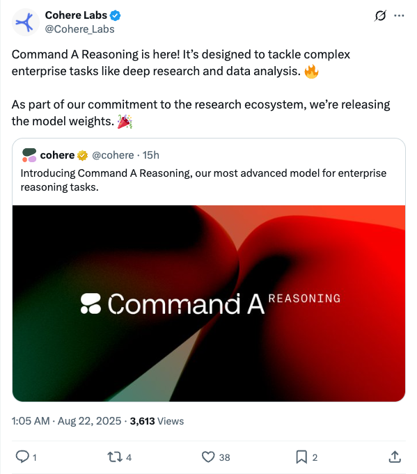
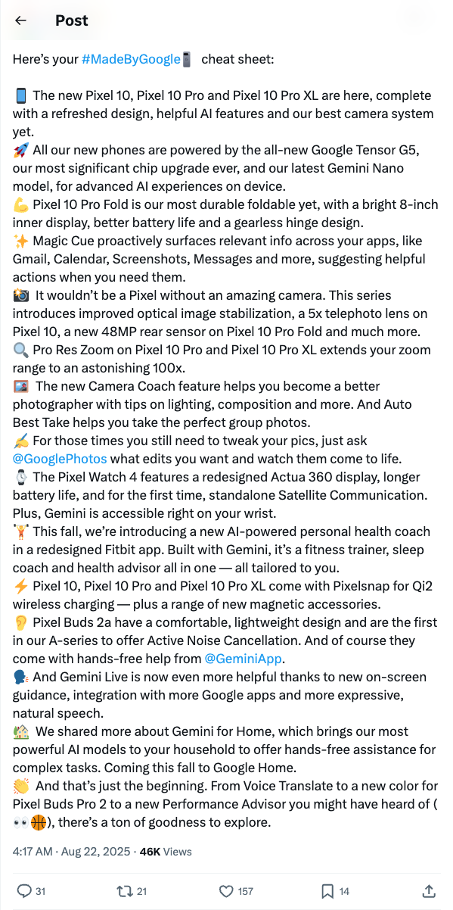
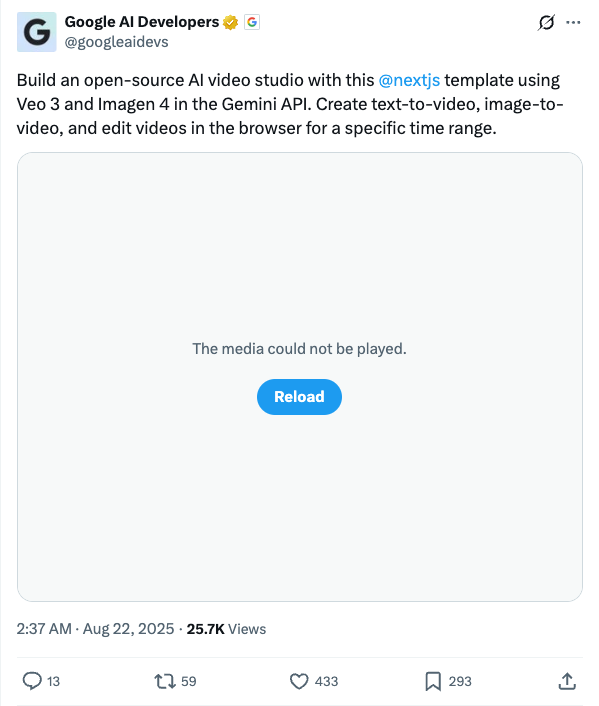
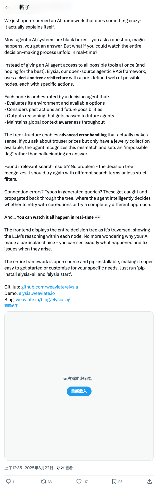
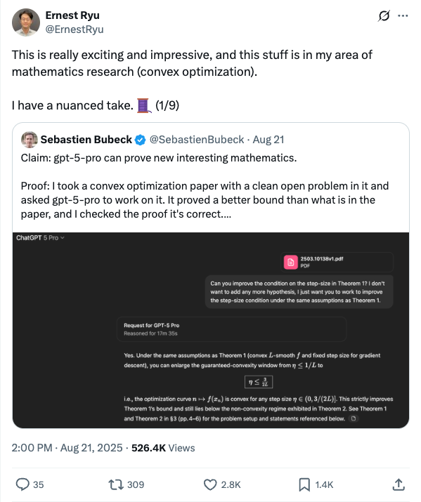

Twitter
Cohere_Labs_Launches Command A Reasoning Model
Published: 2025-08-21T17:05:49.000Z

Cohere Labs has launched Command A Reasoning, its most advanced model specifically designed for complex enterprise reasoning tasks such as deep research and data analysis. This new model aims to enhance AI capabilities for businesses. Demonstrating its commitment to the research ecosystem, Cohere Labs is also releasing the model weights, fostering further development and application of AI technology.
Google_Unveils Pixel 10 Series, Pixel Watch 4, and New AI Products
Published: 2025-08-21T20:17:17.000Z

Google has unveiled its Pixel 10 series, featuring the Tensor G5 chip and Gemini Nano model, enhancing AI capabilities and camera systems with 100x zoom and AI photography assistance. The launch also includes the Pixel Watch 4, offering standalone satellite communication and on-wrist Gemini, alongside Pixel Buds 2a with Active Noise Cancellation. Furthermore, Google introduced AI health coaching, Magic Cue, and Gemini for Home, comprehensively improving user experience across its ecosystem.
googleaidevs_Launches Open-Source AI Video Studio Template
Published: 2025-08-21T18:37:18.000Z

Google AI Developers has released an open-source AI video studio template built with Next.js, integrating Veo 3 and Imagen 4 technologies from the Gemini API. This tool enables users to generate text-to-video and image-to-video content, as well as perform video editing directly within the browser, aiming to streamline the AI video creation process.
weaviate_io_Weaviate Open-Sources Elysia: Explainable Agentic RAG Framework with Real-time Decision Process Visualization
Published: 2025-08-21T16:35:02.000Z

Weaviate has open-sourced Elysia, an innovative agentic RAG AI framework designed for explainability. Unlike traditional black-box AI systems, Elysia utilizes a decision tree architecture that allows real-time visualization of the AI's decision-making process. Its agents evaluate environments, consider actions, and output reasoning, maintaining global context awareness. The framework features advanced error handling, intelligently recognizing mismatches or irrelevant results and retrying with different approaches. Users can observe the entire decision tree traversal and LLM's reasoning within each node, significantly enhancing transparency and debuggability. Elysia is open-source and pip-installable, making it easy to adopt and customize.
ErnestRyu_GPT-5-pro Proves New Math in Convex Optimization, Drawing Attention
Published: 2025-08-21T06:00:48.000Z

Sebastien Bubeck claims that GPT-5-pro successfully proved a new and superior mathematical bound within a convex optimization paper, a result he personally verified as correct. Ernest Ryu, a prominent mathematics researcher specializing in convex optimization, expressed significant excitement and admiration for this achievement, acknowledging its direct relevance to his own field. However, he also indicated a nuanced perspective on the implications of such AI capabilities. This development underscores the profound and evolving potential of large language models to contribute to advanced and complex mathematical research.
wechat
AI Agents Enter Investment Sector: QuantumBit Salon to Explore Future of Fintech
Published: 2025-08-21T04:20:33.000Z
This article explores the burgeoning potential of AI Agents in the financial investment sector, highlighting their capacity to potentially revolutionize traditional investment approaches. It also raises critical questions regarding AI Agents' ability to genuinely comprehend market dynamics, accurately predict trends, and effectively replace professional human investment advisors. To delve deeper into these pivotal discussions, QuantumBit AI Salon is set to host an event on August 22nd, featuring Vakee Lai, Founder and CEO of Singaporean fintech company RockFlow. Vakee brings over 12 years of extensive experience in early-stage investment, fintech product design, and quantitative trading across global high-tech and AI domains. His impressive track record includes leading investments in numerous prominent AI companies, achieving significant returns. Vakee will offer a unique integrated perspective, combining product, capital, and technology insights, to analyze the future development and entrepreneurial opportunities for AI Agents within the investment landscape.
GPT-5 Pro Conducts Independent Mathematical Research! Provides More Precise Bounds After Reading Papers, OpenAI President: This is a Sign of Life
Published: 2025-08-21T04:20:33.000Z
OpenAI's GPT-5 Pro has demonstrated a remarkable capability for independent mathematical research. After analyzing a paper on convex optimization, the model successfully refined a boundary problem, providing a more precise threshold and an original proof that surpassed the initial findings of the human-authored paper. While human researchers later updated their work, presenting an even tighter bound, GPT-5 Pro's unique and distinct proof methodology underscores its genuine capacity for autonomous exploration and discovery, rather than mere replication. OpenAI President Brockman lauded this achievement as a "sign of life," emphasizing the profound implications of AI's advancement in autonomous reasoning and scientific discovery. This breakthrough has ignited widespread discussion and excitement across the tech community, highlighting AI's rapidly evolving role in tackling complex scientific challenges, particularly those demanding abstract mathematical reasoning, novel problem-solving approaches, and the generation of rigorous proofs. It signifies a pivotal step towards more self-sufficient AI systems in research.
ByteDance Open-Sources First Large Model Seed-OSS, Surpassing Qwen
Published: 2025-08-21T00:52:20.000Z
ByteDance's Seed team has officially open-sourced its inaugural large language model, Seed-OSS-36B, a 36-billion-parameter model. This new offering exhibits robust capabilities in long-context processing, complex reasoning, AI agent functionality, and general-purpose tasks, with notable optimizations for international applications. Remarkably, despite being trained on a relatively modest 12T of data, Seed-OSS has achieved outstanding performance across numerous mainstream benchmarks. Specifically, its Base-woSyn version has surpassed models like Qwen3-30B, and the Instruct version has demonstrated superior results compared to similar offerings from OpenAI and Google. A distinctive feature of Seed-OSS is its innovative "thinking budget" mechanism, which empowers users to precisely control the model's reasoning depth and computational expenditure. Released under the permissive Apache-2.0 license for commercial use, Seed-OSS signifies ByteDance's strategic and impactful contribution to the global open-source large model ecosystem.
GitHub
Project AIRI
Published: 2025-08-21T14:14:16Z

Project AIRI aims to recreate AI virtual characters like Neuro-sama, building a real-time interactive digital companion that can seamlessly integrate into users' daily lives. Leveraging advanced Web technologies such as WebGPU, WebAudio, Web Workers, and WebAssembly, the project supports both VRM and Live2D models, ensuring broad compatibility. It operates efficiently across modern browsers, mobile devices (via PWA), and desktop environments, with robust native acceleration capabilities through NVIDIA CUDA and Apple Metal, thanks to projects like Candle. AIRI is designed to integrate with a wide array of large language model APIs, including OpenRouter, OpenAI, and Anthropic Claude, facilitating sophisticated interactions. Its core functionalities include enabling AI characters to play games like Minecraft and Factorio, engage in real-time voice conversations, and provide a truly immersive virtual interaction experience. This project is dedicated to empowering users with their own personalized digital life, offering unparalleled flexibility and control over their AI companions.
Sim: Build and deploy AI agent workflows in minutes.
Published: 2025-08-22T04:44:28Z

Sim is a platform designed for rapidly building and deploying AI agent workflows. It supports both cloud-hosted and various self-hosted deployment options, including NPM package, Docker Compose, Dev Containers, and manual setup. The project leverages a modern tech stack including Next.js, Bun, and PostgreSQL with pgvector extension, offering features like AI embeddings, knowledge bases, and semantic search. Sim aims to simplify AI application development, supporting integration with local large language models (e.g., Ollama), providing developers with a flexible and efficient solution for constructing AI agents.
🔥 Firecrawl
Published: 2025-08-21T16:17:13Z

Firecrawl is an API service designed to empower AI applications with clean data from any website. It offers advanced web scraping, crawling, and data extraction capabilities, converting URL content into LLM-ready Markdown or structured data, and supporting all accessible subpages without requiring a sitemap. Its technical features include handling proxies, anti-bot mechanisms, dynamic content rendering, outputting various LLM-ready formats (e.g., Markdown, HTML, screenshots, structured data), and providing customizability for crawl depth, media parsing, and page interaction actions. Firecrawl aims to deliver reliable data acquisition solutions and supports batch processing, serving as a powerful tool for building the data foundation of AI applications.
huggingface
DuPO: Enabling Reliable LLM Self-Verification via Dual Preference
Optimization
Published: 2025-08-20T06:31:18.000Z

We present DuPO, a dual learning-based preference optimization framework that
generates annotation-free feedback via a generalized duality. DuPO addresses
two key limitations: Reinforcement Learning with Verifiable Rewards (RLVR)'s
reliance on costly labels and applicability restricted to verifiable tasks, and
traditional dual learning's restriction to strictly dual task pairs (e.g.,
translation and back-translation). Specifically, DuPO decomposes a primal
task's input into known and unknown components, then constructs its dual task
to reconstruct the unknown part using the primal output and known information
(e.g., reversing math solutions to recover hidden variables), broadening
applicability to non-invertible tasks. The quality of this reconstruction
serves as a self-supervised reward to optimize the primal task, synergizing
with LLMs' ability to instantiate both tasks via a single model. Empirically,
DuPO achieves substantial gains across diverse tasks: it enhances the average
translation quality by 2.13 COMET over 756 directions, boosts the mathematical
reasoning accuracy by an average of 6.4 points on three challenge benchmarks,
and enhances performance by 9.3 points as an inference-time reranker (trading
computation for accuracy). These results position DuPO as a scalable, general,
and annotation-free paradigm for LLM optimization.
FutureX: An Advanced Live Benchmark for LLM Agents in Future Prediction
Published: 2025-08-16T08:54:08.000Z

Future prediction is a complex task for LLM agents, requiring a high level of
analytical thinking, information gathering, contextual understanding, and
decision-making under uncertainty. Agents must not only gather and interpret
vast amounts of dynamic information but also integrate diverse data sources,
weigh uncertainties, and adapt predictions based on emerging trends, just as
human experts do in fields like politics, economics, and finance. Despite its
importance, no large-scale benchmark exists for evaluating agents on future
prediction, largely due to challenges in handling real-time updates and
retrieving timely, accurate answers. To address this, we introduce
FutureX, a dynamic and live evaluation benchmark specifically
designed for LLM agents performing future prediction tasks. FutureX is the
largest and most diverse live benchmark for future prediction, supporting
real-time daily updates and eliminating data contamination through an automated
pipeline for question gathering and answer collection. We evaluate 25 LLM/agent
models, including those with reasoning, search capabilities, and integration of
external tools such as the open-source Deep Research Agent and closed-source
Deep Research models. This comprehensive evaluation assesses agents' adaptive
reasoning and performance in dynamic environments. Additionally, we provide
in-depth analyses of agents' failure modes and performance pitfalls in
future-oriented tasks, including the vulnerability to fake web pages and the
temporal validity. Our goal is to establish a dynamic, contamination-free
evaluation standard that drives the development of LLM agents capable of
performing at the level of professional human analysts in complex reasoning and
predictive thinking.
MeshCoder: LLM-Powered Structured Mesh Code Generation from Point Clouds
Published: 2025-08-20T17:50:15.000Z

Reconstructing 3D objects into editable programs is pivotal for applications
like reverse engineering and shape editing. However, existing methods often
rely on limited domain-specific languages (DSLs) and small-scale datasets,
restricting their ability to model complex geometries and structures. To
address these challenges, we introduce MeshCoder, a novel framework that
reconstructs complex 3D objects from point clouds into editable Blender Python
scripts. We develop a comprehensive set of expressive Blender Python APIs
capable of synthesizing intricate geometries. Leveraging these APIs, we
construct a large-scale paired object-code dataset, where the code for each
object is decomposed into distinct semantic parts. Subsequently, we train a
multimodal large language model (LLM) that translates 3D point cloud into
executable Blender Python scripts. Our approach not only achieves superior
performance in shape-to-code reconstruction tasks but also facilitates
intuitive geometric and topological editing through convenient code
modifications. Furthermore, our code-based representation enhances the
reasoning capabilities of LLMs in 3D shape understanding tasks. Together, these
contributions establish MeshCoder as a powerful and flexible solution for
programmatic 3D shape reconstruction and understanding.
Tinker: Diffusion's Gift to 3D--Multi-View Consistent Editing From
Sparse Inputs without Per-Scene Optimization
Published: 2025-08-20T16:02:59.000Z

We introduce Tinker, a versatile framework for high-fidelity 3D editing that
operates in both one-shot and few-shot regimes without any per-scene
finetuning. Unlike prior techniques that demand extensive per-scene
optimization to ensure multi-view consistency or to produce dozens of
consistent edited input views, Tinker delivers robust, multi-view consistent
edits from as few as one or two images. This capability stems from repurposing
pretrained diffusion models, which unlocks their latent 3D awareness. To drive
research in this space, we curate the first large-scale multi-view editing
dataset and data pipeline, spanning diverse scenes and styles. Building on this
dataset, we develop our framework capable of generating multi-view consistent
edited views without per-scene training, which consists of two novel
components: (1) Referring multi-view editor: Enables precise, reference-driven
edits that remain coherent across all viewpoints. (2) Any-view-to-video
synthesizer: Leverages spatial-temporal priors from video diffusion to perform
high-quality scene completion and novel-view generation even from sparse
inputs. Through extensive experiments, Tinker significantly reduces the barrier
to generalizable 3D content creation, achieving state-of-the-art performance on
editing, novel-view synthesis, and rendering enhancement tasks. We believe that
Tinker represents a key step towards truly scalable, zero-shot 3D editing.
Project webpage: https://aim-uofa.github.io/Tinker
MCP-Universe: Benchmarking Large Language Models with Real-World Model
Context Protocol Servers
Published: 2025-08-20T13:28:58.000Z

The Model Context Protocol has emerged as a transformative standard for
connecting large language models to external data sources and tools, rapidly
gaining adoption across major AI providers and development platforms. However,
existing benchmarks are overly simplistic and fail to capture real application
challenges such as long-horizon reasoning and large, unfamiliar tool spaces. To
address this critical gap, we introduce MCP-Universe, the first comprehensive
benchmark specifically designed to evaluate LLMs in realistic and hard tasks
through interaction with real-world MCP servers. Our benchmark encompasses 6
core domains spanning 11 different MCP servers: Location Navigation, Repository
Management, Financial Analysis, 3D Design, Browser Automation, and Web
Searching. To ensure rigorous evaluation, we implement execution-based
evaluators, including format evaluators for agent format compliance, static
evaluators for time-invariant content matching, and dynamic evaluators that
automatically retrieve real-time ground truth for temporally sensitive tasks.
Through extensive evaluation of leading LLMs, we find that even SOTA models
such as GPT-5 (43.72%), Grok-4 (33.33%) and Claude-4.0-Sonnet (29.44%) exhibit
significant performance limitations. In addition, our benchmark poses a
significant long-context challenge for LLM agents, as the number of input
tokens increases rapidly with the number of interaction steps. Moreover, it
introduces an unknown-tools challenge, as LLM agents often lack familiarity
with the precise usage of the MCP servers. Notably, enterprise-level agents
like Cursor cannot achieve better performance than standard ReAct frameworks.
Beyond evaluation, we open-source our extensible evaluation framework with UI
support, enabling researchers and practitioners to seamlessly integrate new
agents and MCP servers while fostering innovation in the rapidly evolving MCP
ecosystem.
From AI for Science to Agentic Science: A Survey on Autonomous
Scientific Discovery
Published: 2025-08-18T05:25:54.000Z

Artificial intelligence (AI) is reshaping scientific discovery, evolving from
specialized computational tools into autonomous research partners. We position
Agentic Science as a pivotal stage within the broader AI for Science paradigm,
where AI systems progress from partial assistance to full scientific agency.
Enabled by large language models (LLMs), multimodal systems, and integrated
research platforms, agentic AI shows capabilities in hypothesis generation,
experimental design, execution, analysis, and iterative refinement -- behaviors
once regarded as uniquely human. This survey provides a domain-oriented review
of autonomous scientific discovery across life sciences, chemistry, materials
science, and physics. We unify three previously fragmented perspectives --
process-oriented, autonomy-oriented, and mechanism-oriented -- through a
comprehensive framework that connects foundational capabilities, core
processes, and domain-specific realizations. Building on this framework, we (i)
trace the evolution of AI for Science, (ii) identify five core capabilities
underpinning scientific agency, (iii) model discovery as a dynamic four-stage
workflow, (iv) review applications across the above domains, and (v) synthesize
key challenges and future opportunities. This work establishes a
domain-oriented synthesis of autonomous scientific discovery and positions
Agentic Science as a structured paradigm for advancing AI-driven research.